News
- Congratulations to our student Tamsin Rogers ’23 on winning best talk award at CUSRR 2021 for her research work on reducing the time and cost of software debugging.
- CS at the 2021 Colby Liberal Arts Symposium
See our honors students, independent study students, and students in our 400-level courses present their work! We had synchronous talks from 10 til noon on Wed April 28th 2021 and asynchronous talks to view at your leisure. Check out the schedule and find the links in this Google Doc (you need to be logged into Colby Apps to open this document).
- Waterville Jr High Coding Club (est. Spring 2021)
Regan Bragg and the Jr High Coding Club featured in the Morning Sentinel and the Colby Magazine.
Check out the Promotional Video for the JR High Coding Club
- Colby CS Prof Stacy Doore featured for her work in ethics
She was featured in the Colby Magazine in Spring 2021
- Colby CS Prof Stephanie Taylor talks about jetlag
Check out this video put together by Colby communications.
- Colby CS Prof Hannen Wolfe featured for her work integrating art and computer science
They was featured in the Colby Magazine in Fall 2020.
- Heading into 2020 with Two more Tenure-Track Professors
The department welcomes Dr. Naser Al Madi and Dr. Stacy Doore!
- Heading into 2019 with New Tenure Track Professor
The department welcomes Dr. Hannen Wolfe!
- Heading into 2017 with Six CS Professors

Colby CS professors Caitrin Eaton (coming in the fall of 2017), Ying Li, Stephanie Taylor, Dale Skrien, Bruce Maxwell, and Zadia Codabux are meeting regularly and planning for an exciting 2017-2018.
- Colby @Grace Hopper, Fall 2016
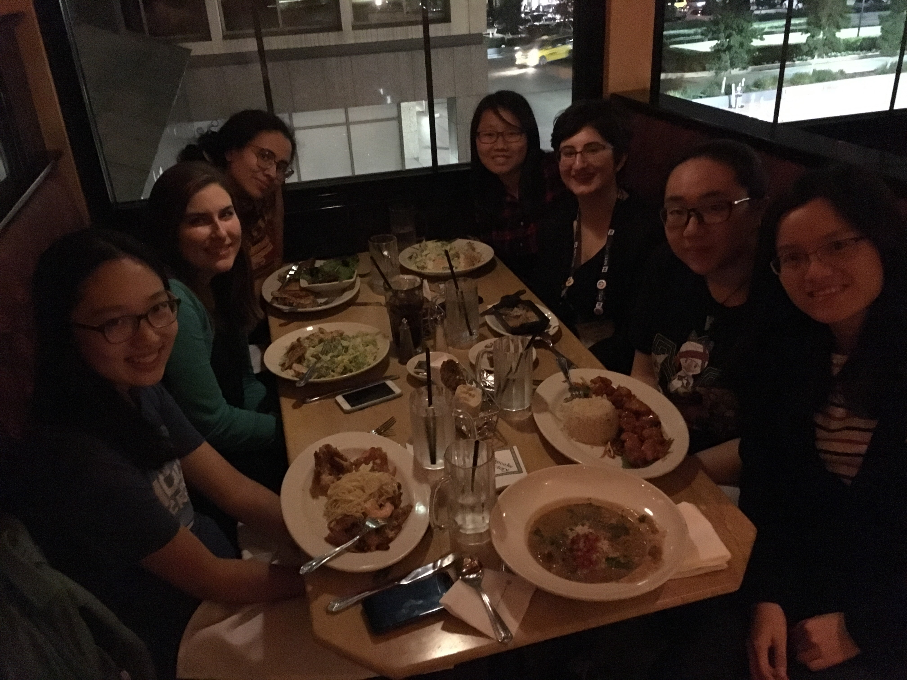 Professor Li and seven students attended the Grace Hopper Celebration of Women in Computing in Houston, TX.
- Colby @Grace Hopper, Fall 2015
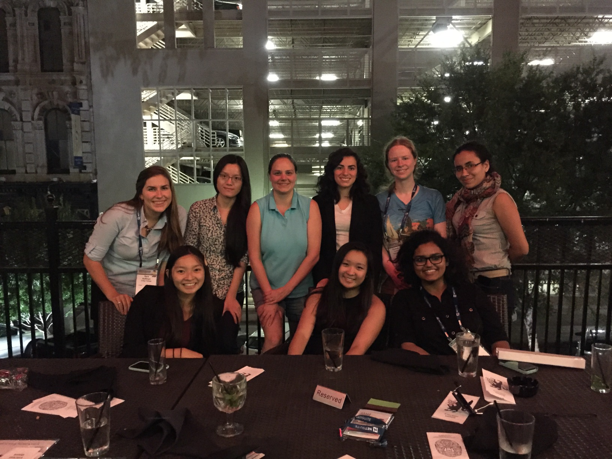 Professors Li and Taylor traveled with 7 students to this year's Grace Hopper Celebration of Women in Computing in Houston, TX.
- Colby Computer Science Hires New Professor, April, 2015
The Department of Computer Science at Colby College is excited to announce that we now four faculty as of the fall of 2015. Dr. Ying Li, who completed her Ph.D. at the University of New Hampshire, will be bringing her talents and interests to the CS curriculum. Her research specialty is intermittent connectivity wireless sensor networks, and we look forward to offering some new courses in that area.
- Celebration of Computer Science at Colby, November 2014
The CS department invited six alumni to campus to talk with students about their experiences after Colby. It was a fun day and the largest CS event to date.
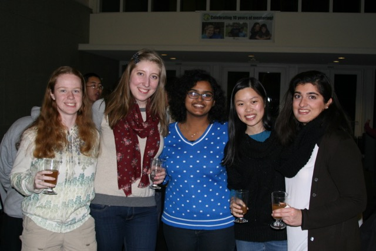 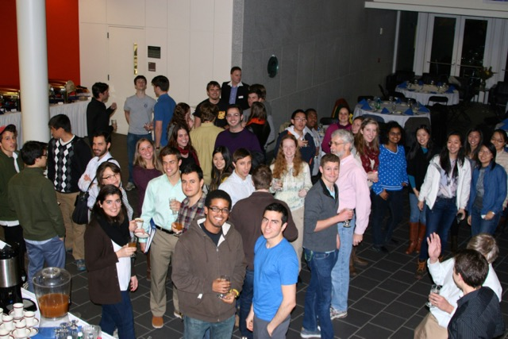 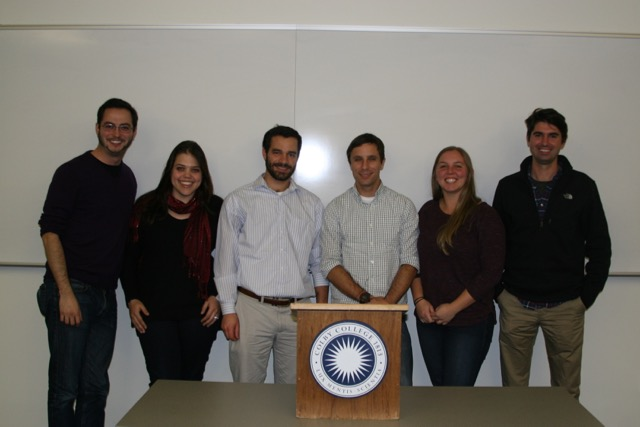 - Maxwell speaks on computer vision for autonoous driving, December 2, 2013
Professor Bruce Maxwell was an invited panel speaker for the First International Workshop on Computer Vision for Autonomous Driving, held in Sydney, Australia as part of the International Conference on Computer Vision. His area of focus is enabling autonomous vehicles to differentiate cast shadows and shading from changes in material.
- Celebration of Computer Science at Colby, November 19, 2013
The Computer Science department invited 8 alumni to spend the afternoon talking with students about life after Colby and work in the software industry, helping the students with their resumes, and coaching them on how to interview for jobs or internships. You can read about the 8 visiting alumni by clicking on this link.
- Colby takes Grace Hopper by an even bigger storm, Fall 2013
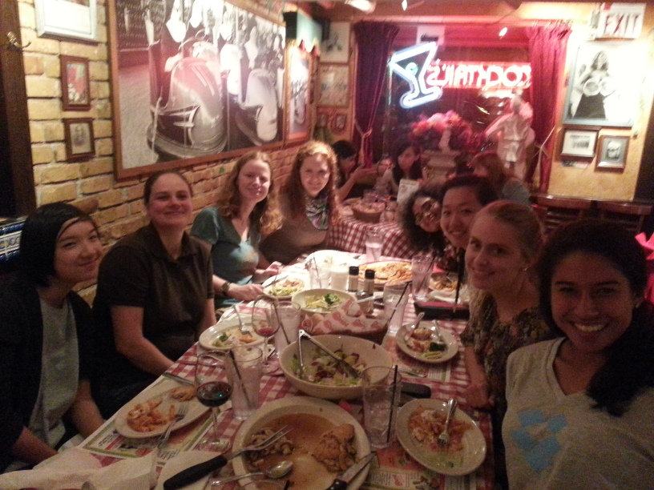 Professor Taylor and 9 students flew to Minneapolis, MN for this year's Grace Hopper Celebration of Women in Computing. We met up with several recent alumns, networked like crazy, and went to many inspiring sessions.
- Colby Grad Kyle Burke returns as visiting faculty, Fall 2013
We are excited to have Kyle Burke, a Colby CS/Math graduate, join the faculty as a Visiting Assistant Professor while Bruce is on sabbatical. Kyle got is Ph.D. in theoretical computer science at Boston University and taught at Wittenberg University for four years before coming to Colby.
- Taylor publishes research about synchronization in circadian clocks, Fall 2012
Professor Taylor recently published a journal article in PLoS Computational Biology that uses experimental evidence and computer modeling to better understand how mice tell time.
- Colby takes Grace Hopper by storm, Fall 2012
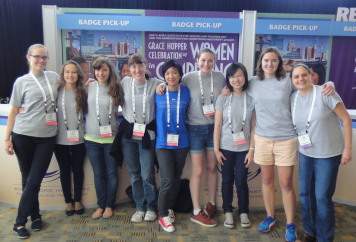 Professor Taylor and eight students drove to Baltimore, MD for this year's Grace Hopper Celebration of Women in Computing. It was highly rewarding and the sessions were chock full of helpful advice and interesting research.
- Dale Skrien publishes a new Java textbook, Spring 2012
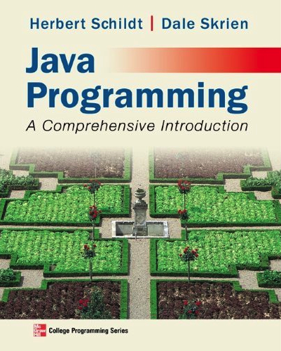 Dale Skrien has coauthored the textbook Java Programming: A Comprehensive Introduction with Herbert Schildt, a popular author of programming books.
The book was written for introductory programming courses that use Java. It covers the fundamentals of programming using Java, but also covers more advanced material, such as object-oriented design, the Swing GUI package, and many parts of the Java API library, including the Collections framework and the Concurrency API. As a result, the book is also useful as a Java reference.
- Taylor travels internationally to present research, Spring 2011
Professor Taylor traveled to Puebla, Mexico and Lucca Italy to present her research at two conferences in chronobiology.
- Sarah Harmon takes 2nd place at Student Research Competition, Fall 2010
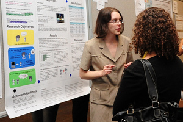 Sarah Harmon '12 presents her poster entitled "Human Perception of Gendered Artificial Entities" at the ACM Undergraduate Student Research Competition at the Grace Hopper Celebration of Women in Computing (in Atlanta, Sep 2010).
Sarah was awarded the second place prize for her research on human-robot interaction. As a winner of the poster contest, she was invited to participate in the second round, which involved an oral presentation. She was given her award in front of a 2000 member audience. Congratulations, Sarah!
- Colby at the Grace Hopper Celebration, Fall 2010
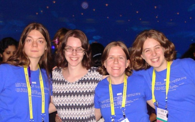 Four computer science majors attended the Grace Hopper Celebration of Women in Computing this year in Atlanta, GA. Martha Witick '12, Sarah Harmon '12, Katherine Smith '12, and Leah Perlmutter '12 found the conference to be interesting and inspiring.
- International Chronobiology, Spring 2010
Professor Taylor traveled to Puebla, Mexico and Lucca Italy to present her research at two conferences in chronobiology.
- Systems Biology Students Present at Conference, Spring 2010
Professor Taylor and six Colby computer science students travelled to Boston for the New England Undergraduate Computing Symposium on April 17, 2010. The students presented scientific posters describing their research, which involved analysis of circadian clocks. Below is a list of the posters, with all authors listed and conference attendees starred:
- David Brazel*: Rhythmicity and Sensitivity of the Mammalian Circadian Clock
- Allyson Cheever, Sarah Harmon*, and Leah Perlmutter*: Comparison of Drosophila Circadian Clock Models Through Oscillator-specific Phase Sensitivity Analysis
- Hannah Coulson and Andrew Cox*: A Parameter-Based Investigation of Oscillatory Behavior in a Model of the Mammalian Circadian Clock
- Olena Marchenko*: Incorporating the CHE-CCA1 loop in a mathematical model of the Arabidopsis thaliana circadian clock
- Christopher Murdock, Daniel Nolan, and David Quigley*: Bread Mold Can Tell Time: A computational analysis of mold circadian clocks
- Teaching Computational Thinking
Professor Maxwell presented a poster at the ACM symposium on computer science education [SIGCSE 2010] on a series of assignements used in the department's introductory CS course. The poster presents a series of five projects that make up the second half of CS 151 Computational Thinking. The projects introduce a number of concepts in computer science within the context of making complex 2D and 3D scenes, including realistic plants and trees.
- Student Proposes Conference Panel, Wins Scholarship, Fall 2009
Senior computer science and biology double major Olena Marchenko will be representing Colby at the Grace Hopper Celebration of Women in Computing this fall. She and Manasi Vartak (a student at WPI) proposed a panel discussion on computational biology featuring professors Anne Condon (U. British Columbia), Nancy Amato (Texas A & M), and Stephanie Taylor (Colby College). The proposal was accepted, and will, consequently, bring an important topic into the spotlight at a conference with over 1400 attendees.
Lena was also one of 134 (out of over 900) applicants awarded a scholarship to attend the conference. She and Professor Taylor will travel to Tuscon the last week of September.
- New Faculty, Fall 2009

Brian S. Eastwood, HHMI Postdoctoral Fellow in Computer Science
We are thrilled to welcome Brian Eastwood, who recently completed his PhD studies at the University of North Carolina at Chapel Hill. In the fall semester he is teaching CS 231 (data structures). In the spring, he will teach an elective computer vision and image analysis course. His research interests include image analysis, scientific computing, and visualization with applications in the natural sciences.
-
Visiting Faculty, Spring 2009
While Dale Skrien is on leave, we are glad to have Toni Fredette teaching Computer Organization and Dan Siff teaching Networks during the spring semester.
- New Faculty, Fall 2008

Stephanie Taylor, Assistant Professor
We are very excited that Stephanie Taylor is joining the department as an Assistant Professor in the fall. For the fall semester she will be teaching the labs for CS 151 and CS 231 and an elective on parallel and distributed processing. Her research interest is creating computational models of biological systems. In the '09-'10 academic year she'll be offering a two-semester sequence on computational modeling with applications to biology.
- 2009 Jan-Plan on 2D Video Game Design
CS will be offering a Jan-plan option in 2009. Professor Maxwell will be teaching 2D video game design (CS 269/369). The course will combine students with CS backgrounds and students without programming experience in creative teams to design a game during the 4 week Jan-plan semester.
- 2008 Summer Student Projects
Professor Maxwell will be working with six CS students in the summer of 2008 on four different research projects. The projects include designing both a vision system and a human-robot interaction system for a humanoid robot, developing remote robotic biology experiments in the Colby woods, visual analysis of bacterial colonies, and the integration of animal tracking and observation data with a GIS system.
- Object-Oriented Design in Java, by Dale Skrien
Professor Dale Skrien published a new textbook Object-Oriented Design Using Java in January of 2008. Dale's students get the contents straight from the source when Dale teaches his Object-Oriented Design course. In the spring of 2008, the students designed a full-featured solitaire system with several different versions of solitaire. The students learned the value of the principles of good software design, such as using abstraction, encapsulation, strong cohesion, weak coupling, coding to interfaces, avoiding duplication, separating responsibilities, and designing for change. If they followed these guidelines, then it was easy for the students to add features to the system.
-
Curriculum Revision
We've completed a revision of the CS curriculum. New aspects of the curriculum include a core course in data analysis and visualization, and the requirement that all majors take a fall-spring sequence of upper level electives. Each year we'll be offering a different fall spring sequence. For 2008-09, the sequence will be computer graphics and 3D video game design. For 2009-10, the sequence will focus on modeling biological systems computationally.
The new minor is designed to integrate CS more closely with a student's major. For example, minors have the option of undertaking a capstone project that integrates with a course in their major field.
As part of the curriculum change, we are using Python as the language for the first course in place of Java. Students who want to TA for CS151 in the fall semester will need to know/learn Python.
Python.org is a great place to start. There is also a list of filtered tutorials for both programmers and non-programmers.
-
New Faculty, Fall 2007
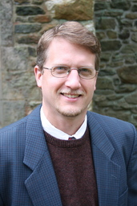 Bruce Maxwell, Associate Professor and Chair
Bruce comes to us from Swarthmore College, where he has been teaching computer science and computer engineering. His research interests include robotics, computer vision, and computer graphics. So don't be surprised this fall if you see robots gliding up and down the hall on the 4th floor of Mudd. Some of them might even offer you a snack
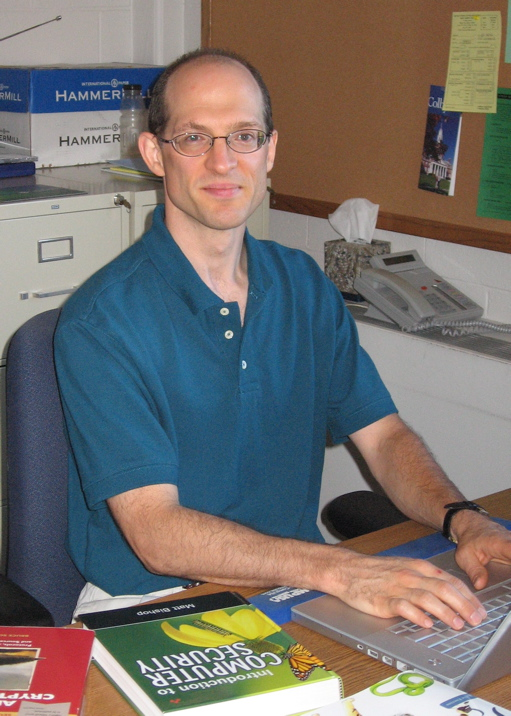 Scott Russell, Visiting Assistant Professor
Scott joins us from Boston University, where he recently finished his Ph.D. on Cryptography. So when the robots start talking with one another, you won't be able to break into their conversation.